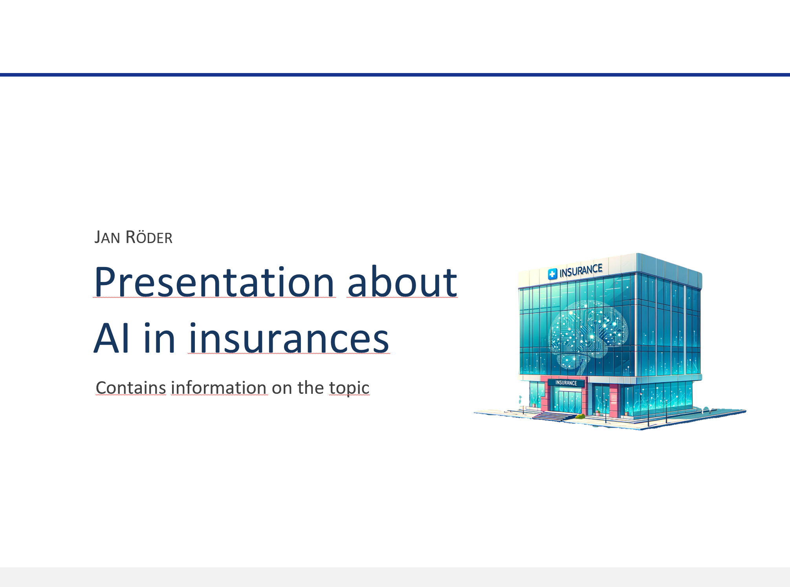

GenAI and Image Segmentation to spice up Presentations
I have been a happy and satisfied user of generative image models such as stable diffusion, midjourney and dalle for over one year now. Admittedly, when the outputs looked pixelated and bad, I did not get the appeal compared to discriminative models that can help with classification tasks.
While I have mainly used these models to create images of imaginary landscapes and futuristic cityscapes, I have learned to appreciate them for more productive uses recently.
Choosing the GenAI model
While midjourney often provides more aesthetic (cooler) images with very diverse art styles, I have found DALL·E 2 from OpenAI to be a lot more reliable in following the given instructions for my use cases. This is especially important when you want to use it to quickly create images that are supposed to express a very specific idea. As added benefit, it can even semi-reliably incorporate text into the images. While it might require a few tries, it generally seems to work. It remains to be seen if the new V6 release by midjourney can keep up.
Example Use Case:
For example, the following images were created with variants of the following prompt. While we can argue about the artistic value, it highlights how slides can be refined with little work, while avoding use of the typical pictograms or powerpoint templates:
Prompt {% highlight python %} “Create the image of a futuristic insurance building. It has glass walls. In the inside can be seen a large digital brain that represents an AI that enhances the decisions of the firm. The interior should look modern and cozy, as is typical for a modern tech company. Perspective from outside looking in. On the top of the building is a sign that says ‘Super Insurance’. Make sure that it is a perspective from outside overlooking the whole building.” {% endhighlight %}
Generated images 
Removing the background
To really use these images in a presentation, we would typically want to remove the background. While this might be easy for someone who is experienced in photoshop, I never really got into that. However, I found Segment Anything that Meta released recently really works wonders for exactly this use case. For me, it really opened up a bit more creative space when it comes to working on presentations.
Prompting with segmentation in mind
Already when writing the prompt, it pays off to keep in mind that you want to segment the image later on.
Sometimes the task can be simplified drastically by specifying stuff like "XYZ in front of white background" etc.
Using Segment Anything
Generated images